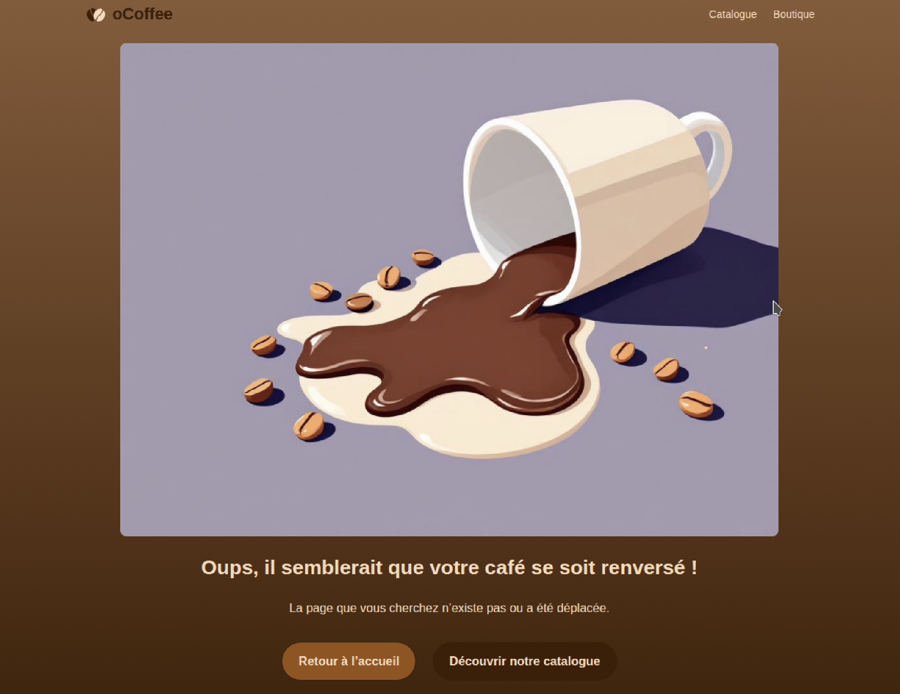
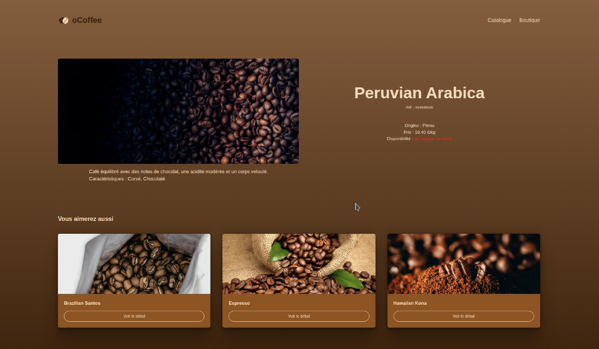
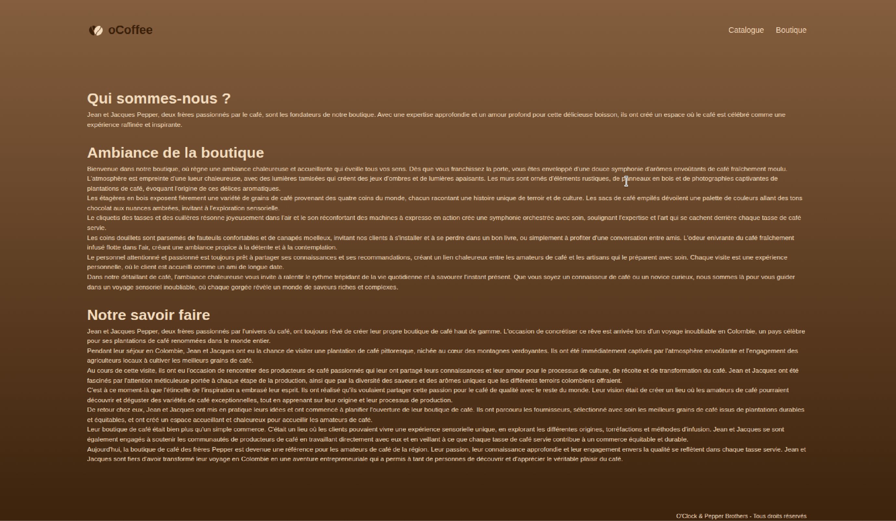

📅 SAISON B Semaine 4 Épisode 5 - Projet en autonomie Jour 3 - Base de Données, Gestion des Erreurs et Style
📚 Introduction
Troisième jour de travail sur le projet oCoffee ! Aujourd’hui, j’ai franchi une étape majeure en créant et connectant la base de données PostgreSQL, en dynamisant entièrement les pages avec les données de la base, et en améliorant l’expérience utilisateur avec une page 404 personnalisée et un design responsive. Voici le détail de cette journée bien remplie.
Note
Le dépôt Github du projet est disponible ici.
Étape 1 : Création de la Base de Données PostgreSQL
Contexte
Hier, j’avais préparé un fichier JSON pour simuler une base de données. Aujourd’hui, j’ai créé la base de données PostgreSQL pour stocker les données de manière permanente.
Actions réalisées
-
Création du script SQL (
data/create_db.sql) : Ce script contient les requêtes pour créer les tablesCOUNTRIES,COFFEE_ATTRIBUTES,COFFEES, etCOFFEES_HAVE_COUNTRIES, basées sur le modèle que j’avais conçu le jour 1 du projet.Exemple de création de table :
CREATE TABLE COUNTRIES ( country_id SERIAL PRIMARY KEY, name VARCHAR(100) NOT NULL ); CREATE TABLE COFFEES ( coffee_ref SERIAL PRIMARY KEY, coffee_name VARCHAR(100) NOT NULL, image VARCHAR(255), price DECIMAL(6, 2) NOT NULL, availability BOOLEAN DEFAULT TRUE, attribute_id INT REFERENCES COFFEE_ATTRIBUTES(attribute_id), country_id INT REFERENCES COUNTRIES(country_id) );Voir le script complet sur mon dépôt Github.
-
Création de la Base De Données et exécution du script :
- J’ai créé la base de données
ocoffeedanspsql:
- Puis j’ai exécuté le script SQL pour créer les tables :
- J’ai créé la base de données
Étape 2 : Connexion à la Base de Données et Récupération des Données
Contexte
J’ai remplacé la logique de récupération des données depuis le fichier JSON par des requêtes SQL pour interagir avec la base de données PostgreSQL.
Actions réalisées
-
Configuration de la connexion à la base de données (
src/models/databaseClient.js) : J’ai utilisé le modulepgpour établir une connexion sécurisée à la base de données.src/models/databaseClient.js/** * Database client module * * This module initializes and exports a PostgreSQL client instance using the 'pg' library. * The connection string is retrieved from the POSTGRES_CONNECTION_STRING environment variable. * The client is connected immediately upon import. * * @module databaseClient */ import { Client } from 'pg'; /** * The PostgreSQL client instance. * * @type {Client} */ const client = new Client(process.env.POSTGRES_CONNECTION_STRING); // Connect to the PostgreSQL database client.connect(); /** * Exports the connected PostgreSQL client for use in other modules. */ export default client; -
Création d’un DataMapper (
src/models/coffee.dataMapper.js) : Ce fichier contient les fonctions pour interagir avec la tableCOFFEES.src/models/coffee.dataMapper.js// Import the PostgreSQL client instance import client from './databaseClient.js'; /** * Coffee data mapper module * * Provides methods to interact with the 'coffees' table in the database. * @module models/coffeeDataMapper */ export default { /** * Retrieve the three latest coffees from the database. * * @async * @function getThreeLatestCoffees * @returns {Promise<Array<Object>>} Array of the three latest coffee objects (reference, name, image) */ async getThreeLatestCoffees() { // SQL query to select the three most recent coffees by reference const selectCoffeesQuery = ` SELECT c.coffee_ref, c.coffee_name, c.image FROM coffees c ORDER BY c.coffee_ref DESC LIMIT 3 `; const result = await client.query(selectCoffeesQuery); return result.rows; }, // other functions... };Voir les modifications complètes sur mon dépôt Github.
-
Modification des contrôleurs : J’ai mis à jour les contrôleurs pour utiliser le
CoffeeDataMapperau lieu du fichier JSON.Exemple avec
catalog.controller.js:src/models/coffee.dataMapper.js// Import the data mapper for database operations related to coffee import coffeeDataMapper from '../models/coffee.dataMapper.js'; /** * Controller for handling catalog page logic. * @module controllers/catalogController */ /** * Catalog controller object containing methods for rendering catalog and coffee details pages. */ export default { /** * Render the catalog page with all coffees from the database. * * This method fetches all coffee entries using the data mapper and renders the 'catalog' view, * passing the coffees as data to the template. * * @async * @function displayCatalog * @param {import('express').Request} req - Express request object * @param {import('express').Response} res - Express response object */ async displayCatalog(req, res) { try { // Fetch all coffees from the database const coffees = await coffeeDataMapper.getAllCoffees(); // Render the catalog page with the list of coffees res.render('catalog', { coffees }); } catch(error) { // Log the error and render a 500 error page console.log(error.message); res.status(500).render('error/500'); } }, // other functions... };Voir les modifications complètes sur mon dépôt Github.
Étape 3 : Gestion des Erreurs 404 et 500
Contexte
Pour améliorer l’expérience utilisateur, j’ai ajouté une page 404 personnalisée et une gestion des erreurs 500.
Actions réalisées
- Création d’une vue pour la page 404 (
views/404.ejs) :
Une page avec une illustration de tasse de café renversée et des liens utiles.

-
Gestion des erreurs 500 :
J’ai créé une vue
views/500.ejs. -
Ajout de
try...catchdans les contrôleurs :Pour gérer les erreurs j'ai ajouté une instruction
try...catchdans les functions des controllers.Exemple dans le
catalog.controller.js:Error 500 handling - src/controllers/catalog.controller.jsasync displayCatalog(req, res) { try { // Fetch all coffees from the database const coffees = await coffeeDataMapper.getAllCoffees(); // Render the catalog page with the list of coffees res.render('catalog', { coffees }); } catch(error) { // Log the error and render a 500 error page console.log(error.message); res.status(500).render('error/500'); } }
Étape 4 : Stylisation des Pages et Responsive Design
Contexte
J’ai travaillé sur le style CSS des nouvelles vues (coffee-details.ejs et shop.ejs) et rendu l’application responsive pour les appareils mobiles.
Actions réalisées
-
Création de fichiers CSS dédiés :
public/css/coffee-details.csspour la page de détail d’un café.public/css/shop.csspour la page de présentation de la boutique.
-
Rendu :
Détail d'un café :

Boutique :

Bilan de la Journée
Ce qui a bien fonctionné
✅ Base de données PostgreSQL : Créée et connectée avec succès.
✅ Dynamisation des pages : Les données sont maintenant récupérées depuis la base.
✅ Gestion des erreurs : Pages 404 et 500 personnalisées et fonctionnelles.
✅ Responsive Design : L’application s’affiche correctement sur mobile.
Difficultés rencontrées
Pas de difficultés majeurs.
Prochaines Étapes et Fonctionnalités Futures
Pour aller plus loin, j’aimerais ajouter :
- Une carte interactive dans la page
shop.ejspour indiquer l’emplacement de la boutique (avec Leaflet et OpenStreetMap). - Un formulaire de contact qui envoie un email de confirmation (avec EmailJS).
- Une page d’administration pour ajouter de nouveaux cafés.
- Déployer l’application sur un PaaS comme Render.
Conclusion
Cette troisième journée a été très enrichissante et m'a permis de voir en détail la gestion d'une base de données.
Ce projet challenge était vraiment sympa à réaliser. Dommage que je n'avais pas plus de temps pour ajouter d'autres fonctionnalités intéressantes (que j'essaierai d'ajouter plus tard). J'ai perdu un peu de temps sur des erreurs bêtes mais c'est comme ça qu'on apprend. C'est le métier qui rentre 😀.